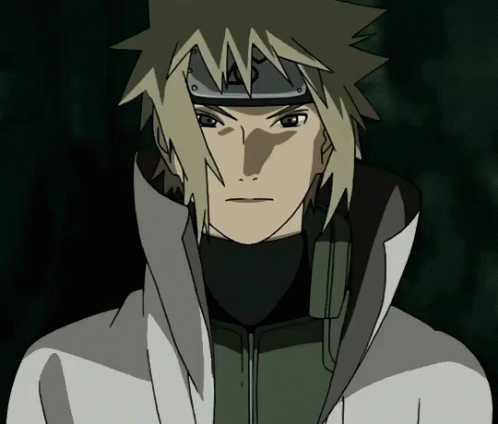
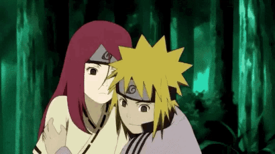

Minato Namikaze (波風ミナト, Namikaze
Minato) was the Fourth Hokage (四代目火影, Yondaime Hokage, Literally meaning: Fourth Fire Shadow) of Konohagakure.
He was renowned all over the world as Konoha's Yellow Flash (木ノ葉の黄色い閃光, Konoha no Kiiroi Senkō, English TV:
Yellow Flash of the Leaf). He died during the Nine-Tailed Demon Fox's Attack, sacrificing his life to seal a
part of the Nine-Tails into his newborn son, Naruto Uzumaki.
Background
Early life
 Minato entered Konoha's Academy
with the dream of earning the villagers' respect and recognition by becoming Hokage. When Kushina Uzumaki moved
to Konoha, she was placed in the same class as Minato. Minato was immediately drawn to her bright red hair,
finding it beautiful. Minato was a natural prodigy as a ninja, the likes of which appears only once in a
generation. When he was added to a genin team under the leadership of Jiraiya, Jiraiya took a special interest
in Minato and took him on as his apprentice, teaching him many of his own signature abilities. In time, Minato's
exceptional skills led Jiraiya to believe he might be the Child of the Prophecy, someone who would someday save
the world.
Minato entered Konoha's Academy
with the dream of earning the villagers' respect and recognition by becoming Hokage. When Kushina Uzumaki moved
to Konoha, she was placed in the same class as Minato. Minato was immediately drawn to her bright red hair,
finding it beautiful. Minato was a natural prodigy as a ninja, the likes of which appears only once in a
generation. When he was added to a genin team under the leadership of Jiraiya, Jiraiya took a special interest
in Minato and took him on as his apprentice, teaching him many of his own signature abilities. In time, Minato's
exceptional skills led Jiraiya to believe he might be the Child of the Prophecy, someone who would someday save
the world.
Years later, after they graduated
and became ninja, Kushina was kidnapped by Kumogakure forces. Konoha mobilised its ninja to retrieve her, but
only Minato noticed the strands of red hair Kushina left behind to mark their path. Minato, acting alone,
rescued her from her captors. On their way back to Konoha, Minato confessed his admiration for her hair and her
strength, causing Kushina – who had previously believed Minato "unreliable" and even "girly" – to fall in love
with him.
>Previous Page
>Home Page